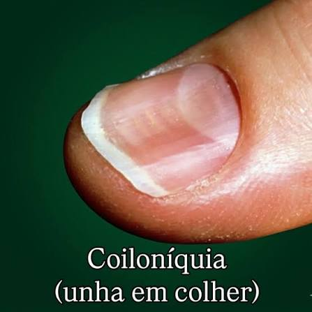
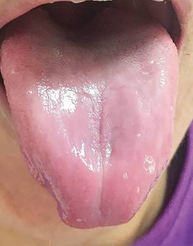
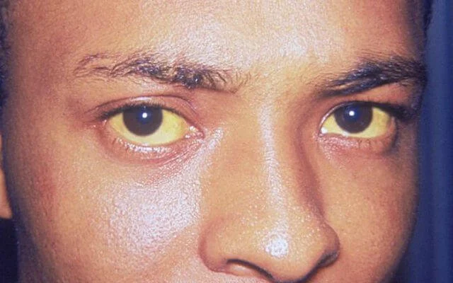
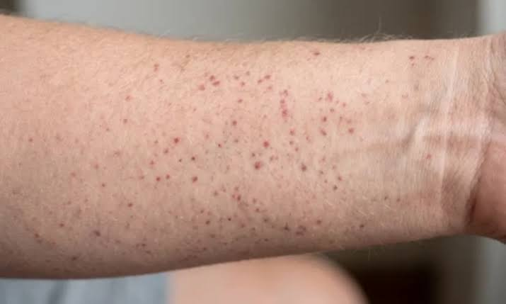
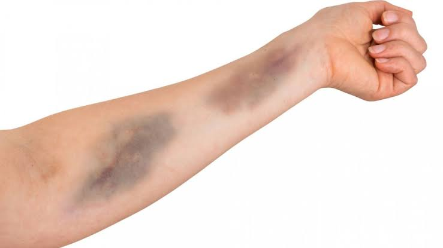

ABORDAGEM DAS ANEMIAS
Da fisiopatologia, semiologia ilustrada e leitura avançada do hemograma ao diagnóstico diferencial, manejo terapêutico atualizado (OMS 2024 / SBP 2026) e critérios de encaminhamento hematológico.
Fundamentos e Semiologia
Anemia verdadeira vs. relativa, cortes de Hb, adaptação pelo 2,3-DPG, atlas semiológico (imagens e vídeo), índices eritrocitários, IPR e hematoscopia.
Classificação Morfológica e Cinética
Matriz diagnóstica VCM × RDW, armadilhas do VCM, anemias hipoproliferativas vs. hiperproliferativas e eixos de hemólise.
Investigação Direcionada
Cinética do ferro, cuidado com HbA2, indicação de EDA/colonoscopia, algoritmo normocítico (TAD) e macrocítico (MMA/Homocisteína).
Tratamento na Prática Clínica
Ferro oral/IV (Ganzoni), diretrizes SBP 2026, B12/Folato, Doença Crônica/DRC, Gestantes e Regra dos 3 Terços no Idoso.
Anemias Especializadas e Fluxo
Talassemias (α e β), Doença Falciforme e emergências, resumo de AHAI/PTT/HPN/Aplasia e checklist de encaminhamento.
Anemia Verdadeira vs. Relativa e Mecanismos Compensatórios
Redução da massa eritrocitária total vs. alterações da volemia plasmática e respostas adaptativas à hipóxia.
🩸 Anemia Verdadeira
Ocorre quando existe uma redução real da massa e do volume total de eritrócitos circulantes no organismo, diminuindo a capacidade de transporte arterial de oxigênio pelo sangue:
- Defeito de produção medular (hipoproliferação)
- Aumento da taxa de destruição (hemólise)
- Perda sanguínea hemorrágica aguda ou crônica
💧 Anemia Relativa (Hemodiluição)
Ocorre por expansão desproporcional do volume plasmático sem redução correspondente da massa eritrocitária total:
- Gestação normal: volume plasmático expande entre 40% e 50%, superando o aumento fisiológico de 15% a 25% da massa de hemácias a partir da 7ª semana.
- Hiper-hidratação: associada à ICC ou insuficiência renal.
- Cirrose hepática: expansão plasmática de 10% a 30%.
🔥 Hemoconcentração (Efeito Inverso)
Situações de contração de volume concentram as hemácias no leito vascular, elevando falsamente a concentração de Hb e o Ht e mascarando uma anemia subjacente:
- Causas clássicas: Desidratação grave ou choque por extravasamento capilar (ex.: sepse, queimaduras ou arboviroses).
- A anemia real torna-se evidente somente após a restauração volêmica.
⚙️ Três Respostas Adaptativas Principais à Hipóxia Tecidual (Equação de Fick)
A curva de dissociação apresenta formato sigmoide. O deslocamento para a direita reduz a afinidade da hemoglobina pelo oxigênio, permitindo que o gás seja cedido mais prontamente aos tecidos periféricos sob pressões parciais locais de O₂.
Sintetizado na via glicolítica de Embden-Meyerhof (derivação de Rapoport-Luebering), o 2,3-DPG liga-se seletivamente aos tetrâmeros de desoxi-hemoglobina, estabilizando a forma desoxigenada. Acidose (efeito Bohr), hipercapnia e hipertermia reforçam o desvio.
Elevação da frequência cardíaca e do volume sistólico (aumento do débito cardíaco), aliada à menor viscosidade sanguínea. Vasoconstrição seletiva desvia o fluxo da pele e músculos para cérebro, miocárdio, fígado e rins. Risco de ICC de alto débito e sopros ejetivos funcionais.
Valores de Corte de Hemoglobina (g/dL) e Estratificação de Gravidade
Baseados na concentração de hemoglobina situada 2 desvios-padrão (-2 DP) abaixo da média em indivíduos saudáveis ao nível do mar.
| População / Faixa Etária | Hb Média (-2 DP / Corte) | Anemia Leve (g/dL) | Anemia Moderada (g/dL) | Anemia Grave (g/dL) | Fonte / Diretriz |
|---|---|---|---|---|---|
| Recém-nascido a termo (RNT) | 18,0 (Corte: 15,0) | — | — | — | SBP 2026 / Nathan & Oski |
| 1 semana / 2 semanas de vida | 1sem: 17,0 (13,5) | 2sem: 16,0 (12,5) | — | — | — | SBP 2026 / Nathan & Oski |
| 1 mês / 2 meses / 3 a 6 meses | 1m: 14,0 (10,0) | 2m: 11,5 (9,0) | 3-6m: 11,5 (9,5) | — | — | — | SBP 2026 / Nathan & Oski |
| Crianças de 6 a 23 meses | < 10,5 | — | — | — | Atualização OMS 2024 / SBP 2026 |
| Crianças de 24 a 59 meses (2–4 anos) | < 11,0 | 10,0 a 10,9 | 7,0 a 9,9 | < 7,0 | OMS 2024 / SBP 2026 / Duncan |
| Crianças de 6 a 59 meses (critério clássico) | < 11,0 | 10,0 a 10,9 | 7,0 a 9,9 | < 7,0 | OMS Clássica / Duncan |
| Crianças de 5 a 11 anos | < 11,5 | 11,0 a 11,4 | 8,0 a 10,9 | < 8,0 | OMS / Duncan / SBP 2026 |
| Crianças de 12 a 14 anos (meninas e meninos) | < 12,0 | 11,0 a 11,9 | 8,0 a 10,9 | < 8,0 | OMS / Duncan / SBP 2026 |
| Mulheres não grávidas (≥ 15 anos) | < 12,0 | 11,0 a 11,9 | 8,0 a 10,9 | < 8,0 | OMS / Duncan / SBP 2026 |
| Homens (≥ 15 anos) | < 13,0 | 11,0 a 12,9 | 8,0 a 10,9 | < 8,0 | OMS / Duncan / SBP 2026 |
| Gestantes — 1º e 3º Trimestres | < 11,0 | 10,0 a 10,9 | 7,0 a 9,9 | < 7,0 | OMS 2024 / SBP 2026 |
| Gestantes — 2º Trimestre | < 10,5 | — | — | — | OMS 2024 / SBP 2026 |
Apresentação Aguda vs. Crônica e Achados Específicos
Como a velocidade de instalação e os sinais físicos guiam a suspeita etiológica imediata.
⚡ Instalação Aguda
Decorre de perdas hemorrágicas volumosas repentinas ou hemólise intravascular maciça. Predominam a hipovolemia aguda e a instabilidade hemodinâmica: hipotensão postural, taquicardia desproporcional, sudorese fria, tontura ao ortostatismo, síncope e choque hipovolêmico.
Nota diagnóstica: Nas primeiras horas de sangramento agudo total, Hb e Ht mantêm-se falsamente normais pela perda proporcional de hemácias e plasma.
⏳ Instalação Crônica
Instala-se de maneira lenta e insidiosa (deficiência de ferro, B12/folato ou doenças inflamatórias crônicas). Com volemia mantida e ativação do 2,3-DPG, desenvolve-se grande tolerância fisiológica: jovens podem manter-se oligossintomáticos em repouso com Hb de 6 a 7 g/dL. Sintomas surgem aos esforços e são menos tolerados por idosos, coronariopatas e portadores de DPOC.
🩺 Sinais Gerais da Síndrome
- Sintomas gerais: fadiga, adinamia/astenia, letargia, irritabilidade, dificuldade de concentração, cefaleia, tonturas, lipotimia e dispneia aos esforços.
- Mucosa conjuntival pálida: indica habitualmente Hb < 9 g/dL.
- Apagamento de pregas palmares: sob hiperextensão indica Hb < 7–8 g/dL.
- Cardiovascular: taquicardia sinusal, pulso amplo/martelo-d'água, sopro sistólico funcional ejetivo (foco pulmonar/BEE) e edema maleolar.
| Achado Semiológico | Descrição Clínica | Etiologia Suspeita | Mecanismo Fisiopatológico |
|---|---|---|---|
| Pica / Pagofagia / Geofagia | Perversão do apetite com compulsão por gelo, terra/barro ou amido cru. | Deficiência de Ferro | Muito específica para carência tecidual de ferro; fisiopatologia central em núcleos da base cerebrais. |
| Coiloníquia | Unhas finas, quebradiças, com curvatura côncava ("unhas em colher"). | Ferropriva Crônica / Grave | Comprometimento trófico epitelial e ungueal decorrente de depleção grave de enzimas férricas. |
| Síndrome das Pernas Inquietas | Desconforto sensitivo em MMII com urgência motora irresistível para movimentar as pernas. | Deficiência de Ferro | Depleção crônica das concentrações de ferro nas regiões nigroestriatal e núcleo rubro cerebrais. |
| Glossite Atrófica | Língua dolorosa, eritematosa, lisa e brilhante por apagamento das papilas linguais. | B12, Folato ou Ferro | Interrupção da síntese de DNA ou renovação celular mitótica nas mucosas de rápida proliferação. |
| Parestesias e Perda Vibratória | Parestesias em "luva e bota", perda vibratória/postural, ataxia sensitiva, Romberg+ e Lhermitte. | Deficiência de B12 / Perniciosa | Degeneração combinada subaguda da medula espinal (colunas posteriores e tratos corticoespinhais). |
| Icterícia + Esplenomegalia + Colelitíase | Escleras amareladas (BI ↑) com fezes normais; baço palpável em QSE; cálculos de bilirrubinato de cálcio em jovens. | Anemias Hemolíticas e Megaloblástica grave | Catabolismo acelerado do heme, hiperplasia reticuloendotelial esplênica e hiperexcreção biliar crônica de pigmentos. |
| Bossa Frontal (Fácies Talassêmica) | Proeminência frontal e malar acentuada por alargamento dos ossos do crânio. | Talassemia Maior/Intermédia | Expansão compensatória acentuada da medula óssea vermelha eritroide sobre a cortical óssea por eritropoese ineficaz. |
| Petéquias e Equimoses | Lesões purpúricas cutaneomucosas puntiformes ou em placas hemorrágicas espontâneas. | Insuficiência Medular / PTT / CIVD | Trombocitopenia concomitante grave associada à aplasia/leucemia ou consumo plaquetário periférico. |
Achados Clínicos Relevantes na Inspeção e Exame Físico
Clique em qualquer imagem para ampliar em tela cheia. Salve os arquivos na mesma pasta do HTML com os nomes indicados abaixo.

coiloniquia.jpg
Coiloníquia ("Unhas em Colher")
Unhas finas, quebradiças e com concavidade transversal e longitudinal por depleção crônica de enzimas férricas epiteliais.

glossite_atrofica.jpg
Glossite Atrófica (Glossite de Hunter)
Língua dolorosa, eritematosa, lisa e brilhante devido à atrofia das papilas linguais por falha na renovação mitótica mucosa.

ictericia.jpg
Icterícia Escleral (Bilirrubina Indireta)
Coloração amarelada de escleras e mucosas sem colúria e com fezes normocrômicas, refletindo catabolismo acelerado do anel heme.
esplenomegalia_manobra.mp4
Pesquisa de Esplenomegalia (Manobra)
Percussão do Espaço de Traube e palpação bimanual do QSE (decúbito dorsal e posição de Schuster) na hemólise extravascular crônica.

petequias.jpg
Petéquias Cutaneomucosas
Lesões purpúricas puntiformes que não desaparecem à digitopressão, sinalizando plaquetopenia grave concomitante à anemia.

equimoses.jpg
Equimoses Espontâneas
Placas hemorrágicas subcutâneas associadas a falência medular global (pancitopenia) ou microangiopatias trombóticas com consumo.
Índices Eritrocitários: Significado, Referências e Artefatos
Parâmetros diretos, calculados e os interferentes pré-analíticos que distorcem os contadores automatizados.
RBC (Hemácias)
M: 4,0–5,4 | H: 4,5–6,0 (×10⁶/µL)Clínica: Em traços talassêmicos, a contagem costuma estar normal ou desproporcionalmente aumentada (> 5,0–5,5 milhões/µL) apesar da microcitose.
Artefatos: Subestimada por crioaglutinação; superestimada por desidratação grave.
Hemoglobina (Hb)
M: 12,0–16,0 | H: 13,5–17,5 g/dLClínica: Medida espectrofotométrica direta (cianometemoglobina). É o parâmetro primário para confirmação laboratorial de anemia.
Artefatos (Falsa ↑ por turbidez): Hipertrigliceridemia (lipemia), hiperbilirrubinemia intensa, hiperleucocitose (>50–100 mil/µL) e paraproteínas.
Hematócrito (Ht)
M: 36%–48% | H: 40%–52%Artefatos: Erros de centrifugação com plasma retido no método manual; alterações espúrias do VCM (crioaglutinação, hiperglicemia) repercutem diretamente no Ht calculado.
VCM (Volume Médio)
Adulto: 80–100 fLPediatria: RNT 98–108 fL; lactentes de 6–24m têm limite inferior normal de 70 fL.
Falsa ↑: Crioaglutininas, rouleaux, reticulocitose intensa, hiperglicemia.
Falsa ↓: Esquistócitos ou plaquetas gigantes.
HCM (Hemoglobina Corpuscular Média)
Referência: 27 a 32 pg (ou 30–34 pg)Representa a massa média de hemoglobina contida em cada eritrócito. Reduz-se na hipocromia (< 27 pg). Sofre interferência de lipemia ou erro na contagem de RBC.
CHCM (Concentração de Hb Corpuscular)
Referência: 30 a 36 g/dL (Índice mais estável)↓ (< 30 g/dL): Hipocromia ferropriva avançada.
↑ Patológico (34,5–38 g/dL): Esferocitose e Xerocitose Hereditária (desidratação celular).
> 37–38 g/dL fora disso: Artefato pré-analítico (crioaglutinação, hemólise in vitro, lipemia).
RDW (Índice de Anisocitose)
RDW-CV: 11,5%–15,0% | RDW-DP: 37–47 fLQuantifica a anisocitose pela curva gaussiana de volume:
- Ferropriva: Eleva-se precocemente pela coexistência de novos micrócitos com normócitos antigos.
- Traço Talassêmico: Hemácias uniformemente microcíticas com RDW normal ou quase normal.
- Muito elevado: Populações dimórficas (pós-transfusão, resposta ao ferro, sideroblástica).
Avaliação pelos Reticulócitos e Índice de Produção Reticulocitária (IPR)
Eritrócitos recém-liberados com RNA ribossômico residual (policromáticos em Wright; coráveis por azul de cresil brilhante).
1. Contagem Percentual (%)
VR: 0,5% a 1,5% (até 2,0%)Limitação crítica: Um valor percentual isolado é ilusório. Uma contagem de 2% é normal para Ht = 42%, mas revela resposta medular completamente deficiente se o paciente tiver Ht = 20%.
2. Contagem Absoluta (/µL)
VR: 20.000 a 100.000 /µLExpressa a quantidade numérica real de reticulócitos liberados por microlitro de sangue periférico (ou 25 a 90 × 10⁹/L).
3. Reticulócito Corrigido (%)
Corrige a diluição do HtAjusta a porcentagem para o grau de anemia. Alternativa pela Hemoglobina:Ret. Corr (%) = Ret(%) × (Hb ÷ 15)
🧮 4. Índice de Produção Reticulocitária (IPR)
Na anemia grave, a eritropoetina elevada libera reticulócitos imaturos de estresse (shift reticulocytes) que levam até 2,5 dias para perder o RNA no sangue periférico (em vez de 1 dia):
| Hematócrito do Paciente | Fator de Maturação (dias) |
|---|---|
| 36% a 45% | 1,0 |
| 26% a 35% | 1,5 |
| 16% a 25% | 2,0 |
| < 16% | 2,5 |
🎯 Interpretação Clínica da Resposta Medular
IPR > 2,0 a 2,5 → Hiperproliferativa (Regenerativa)
Reflete medula óssea íntegra respondendo vigorosamente à perda periférica: hemólise ativa (imune, enzimopatia, membrana) ou recuperação de perda sanguínea aguda (3º ao 5º dia).
IPR < 2,0 (geralmente < 1,0) → Hipoproliferativa
Resposta medular insuficiente para a gravidade da anemia por:
- Carência de substratos: Ferro, Vitamina B12 ou Folato.
- Déficit/bloqueio de EPO: DRC, Anemia da Inflamação (hepcidina + IL-1/TNF-α/IFN-γ), Hipotireoidismo.
- Insuficiência medular primária: Aplasia, SMD, leucemias/mieloptise.
Hematoscopia: Alterações Morfológicas Eritrocitárias
Correlação direta entre a morfologia da hemácia no sangue periférico e o mecanismo patológico subjacente.
| Alteração Hematoscópica | Descrição Morfológica | Doenças / Condições Associadas | Base Patológica / Mecanismo |
|---|---|---|---|
| Esferócitos | Esféricos, hiperdensos, menores, sem a palidez central bicôncava. | Esferocitose Hereditária, AHAI Quente, grandes queimaduras. | Perda de área de superfície de membrana (espectrina, anquirina) ou fagocitose parcial esplênica de opsoninas. |
| Esquizócitos | Fragmentos irregulares, cortados, em formato de "capacete" ou triângulo. | PTT, SHU, CIVD, HELLP, próteses valvares mecânicas defeituosas. | Fragmentação mecânica por cisalhamento das hemácias contra microtrombos de fibrina e plaquetas nos capilares. |
| Drepanócitos | Hemácias em foice, crescentes, delgadas com extremidades pontiagudas. | Doença Falciforme (HbSS, HbS/β⁰, HbSC). | Polimerização das moléculas de desoxi-hemoglobina S sob desoxigenação e acidose tecidual. |
| Dacriócitos | Hemácias poiquilocíticas deformadas em formato de "lágrima" ou gota. | Mielofibrose Primária, mieloptise (infiltração medular), talassemia maior. | Dano mecânico e distorção plástica ao transpassarem as malhas rígidas do estroma medular fibrótico ou esplênico. |
| Hemácias em Alvo (Codócitos) | Condensação central de Hb circundada por halo claro ("tiro ao alvo"). | Talassemias (α e β), HbC/HbSC, hepatopatias obstrutivas, pós-esplenectomia. | Excesso de membrana lipídica celular relativo ao conteúdo intracelular de hemoglobina (ou precipitação por HbC). |
| Eliptócitos / Células em Lápis | Ovais e alongadas em formato de charuto ou delgadas como "lápis". | Eliptocitose hereditária; Células em lápis (pencil cells): Ferropriva grave. | Mutações nas proteínas de autoassociação da espectrina ou fragilidade do citoesqueleto sob carência extrema de ferro. |
| Estomatócitos | Eritrócitos exibindo fenda retilínea central transparente lembrando uma "boca". | Estomatocitose Hereditária (Hidrocitose), hepatopatia alcoólica crônica, fármacos. | Alterações patológicas de permeabilidade da membrana a cátions (aumento de Na⁺ e água intracelular). |
| Acantócitos | Espículas e projeções espinhosas de distribuição irregular e tamanhos variados. | Hepatopatia crônica grave (cirrose), abetalipoproteinemia, desnutrição, hipoesplenismo. | Infiltração e excesso de colesterol não esterificado na camada lipídica externa da membrana eritrocitária. |
| Células Mordidas (Bite) / Bolha (Blister) | Perda semicircular periférica ("mordidas") ou vacuoladas ("em bolha"). | Deficiência de G6PD (crise oxidativa por feijão-fava, infecções, dapsona, sulfas). | Remoção mecânica esplênica (pitting) de corpúsculos de Heinz insolúveis aderidos à membrana pelos macrófagos. |
Fenômenos de Agrupamento, Inclusões e Série Branca
Diferenciação entre Rouleaux e Aglutinação, inclusões citoplasmáticas e pleocariócitos.
| Achado / Inclusão | Descrição Morfológica | Doenças / Condições Associadas | Base Patológica / Mecanismo |
|---|---|---|---|
| Fenômeno de Rouleaux | Hemácias empilhadas de forma organizada e contínua ("pilhas de moedas"). | Mieloma Múltiplo, Macroglobulinemia de Waldenström, processos inflamatórios (VHS ↑). | Neutralização da carga zeta negativa da superfície das hemácias pelo excesso de proteínas plasmáticas de alto peso. |
| Aglutinação Eritrocitária | Agrupamento caótico e disforme de hemácias aderidas em múltiplos blocos. | Doença da Crioaglutinina (AHAI a frio - IgM), Mycoplasma pneumoniae, mononucleose. | Ligação multivalente de anticorpos IgM aos antígenos da membrana de eritrócitos sob baixas temperaturas (< 30 °C). |
| Corpúsculos de Howell-Jolly | Inclusões arredondadas, densas, azul-arroxeadas, de localização excêntrica. | Asplenia Anatômica (pós-esplenectomia) ou Funcional (Falciforme), megaloblástica. | Remanescentes de fragmentos de cromatina/DNA nuclear que não foram filtrados pelo baço por perda da função esplênica. |
| Corpúsculos de Pappenheimer | Grânulos basofílicos pequenos e irregulares contendo ferro (positivos ao Perls). | Anemias Sideroblásticas, estados de sobrecarga grave de ferro, pós-esplenectomia. | Acúmulo mitocondrial perinuclear de ferro não incorporado ao anel de protoporfirina do heme. |
| Corpúsculos de Heinz | Precipitados de Hb insolúveis visíveis sob coloração supravital (violeta de metila / azul de cresil). | Deficiência de G6PD, síndromes de hemoglobina instável, esplenectomizados. | Oxidação patológica das cadeias de globina e grupos sulfidrila da Hb por incapacidade redutora de NADPH/glutationa. |
| Pontilhado Basófilo (Ponteado) | Pontos finos ou grosseiros azul-arroxeados difusos em todo o citoplasma. | Intoxicação por Chumbo (Saturnismo), Talassemias (α e β), Def. de Pirimidina 5'-nucleotidase, SMD. | Precipitação anômala de agregados de RNA e ribossomos citoplasmáticos por bloqueio da degradação enzimática. |
| Neutrófilos Hipersegmentados (Pleocariócitos) | Granulócitos neutrófilos com ≥ 5 a 6 lóbulos nucleares bem definidos. | Anemia Megaloblástica (Deficiência de Vitamina B12 e/ou Ácido Fólico). | Atraso na divisão e maturação nuclear com dissociação núcleo-citoplasmática por defeito na síntese de DNA. |
Matriz Diagnóstica Morfológica (Cruzamento VCM × RDW)
Combinação do volume médio (VCM) com a heterogeneidade celular (RDW normal 11,5–15% vs. aumentado > 15%).
| Faixa de VCM | RDW Normal (População Homogênea) | RDW Aumentado (População Heterogênea / Anisocitose) |
|---|---|---|
|
Microcítica VCM < 80 fL |
|
|
|
Normocítica VCM 80–100 fL |
|
|
|
Macrocítica VCM > 100 fL |
|
|
As 4 Grandes Armadilhas Diagnósticas do VCM
O VCM baseia-se na média aritmética volumétrica — populações antagônicas ou artefatos pré-analíticos distorcem o valor.
Anemias Mistas e Populações Dimórficas (Falso VCM Normocítico)
A coexistência de deficiência de ferro (microcitose) com deficiência de folato ou B12 (macrocitose) — ou traço talassêmico com anemia perniciosa — produz duas subpopulações distintas que se neutralizam matematicamente na média, resultando em um VCM falsamente normocítico (80 a 100 fL).
🔍 Como desmascarar: RDW substancialmente elevado (> 18–20%), histograma automatizado exibindo curva bimodal e hematoscopia revelando dupla população com neutrófilos hipersegmentados e micrócitos hipocrômicos.
Reticulocitose Exuberante (Falsa Macrocitose)
Os reticulócitos recém-liberados são células maiores, mais hidratadas e de maior volume que os eritrócitos maduros. Em anemias hiperproliferativas acentuadas (AHAI, crise de G6PD ou pós-hemorragia aguda), a liberação massiva de reticulócitos desloca a média celular e eleva o VCM para > 100 a 115 fL sem defeito na síntese de DNA.
🔍 Como desmascarar: Confirmação de contagem absoluta de reticulócitos e IPR elevados + policromasia expressiva ao esfregaço periférico.
Crioaglutininas e Rouleaux (Pseudomacrocitose Pré-Analítica)
Na Doença da Crioaglutinina (AHAI a frio por IgM) ou infecção por Mycoplasma pneumoniae, a queda térmica in vitro (< 30 °C) aglutina hemácias em grumos. Ao passarem pelo sensor de impedância, múltiplos eritrócitos são lidos como uma única hemácia gigante: RBC falsamente deprimida, VCM exorbitante (> 120–140 fL) e CHCM aberrante (> 38 g/dL). Fenômeno análogo ocorre no rouleaux do Mieloma Múltiplo.
🔍 Como desmascarar: Pré-aquecer a amostra a 37 °C desfaz a crioaglutinação e normaliza os índices; a lâmina confirma grumos ou rouleaux.
Fragmentação Mecânica e Edema Osmótico In Vitro
- Pseudomicrocitose por fragmentação: A presença maciça de esquistócitos (PTT e SHU) ou plaquetas gigantes pode confundir os canais de contagem, rebaixando artificialmente o VCM.
- Edema osmótico in vitro: Hiperglicemia acentuada (> 400–600 mg/dL) gera hiperosmolaridade intracelular no tubo; quando o sangue é diluído no meio isotônico do equipamento, a entrada repentina de água provoca tumefação celular e elevação espúria do VCM.
Avaliação Cinética e Anemias Hipoproliferativas (IPR < 2,0)
Quando a medula óssea falha em compensar a anemia (habitualmente IPR < 1,0 e reticulócitos < 20.000–25.000/µL).
Defeito de Diferenciação
- Anemia Aplásica Adquirida: destruição imune mediada por linfócitos T autorreativos (IFN-γ, TNF-α), medula < 25% celular + pancitopenia.
- Aplasia Eritroide Pura: Parvovírus B19, timoma, autoimune.
- Mieloptise / Infiltração: leucemias, linfomas, metástases, mielofibrose (dacriócitos + leucoeritroblastose).
- SMD Hipoplásica e Hereditárias: Fanconi, Diamond-Blackfan.
Síntese Deficiente de DNA
Dissociação núcleo-citoplasmática e apoptose intramedular (eritropoese ineficaz):
- Deficiência de Vitamina B12: anemia perniciosa, gastrectomia, doença celíaca, Crohn ileal, dieta estrita.
- Deficiência de Folato: privação dietética, alcoolismo, má absorção, hiperconsumo.
- Fármacos: hidroxiureia, metotrexato, azatioprina, AZT.
Defeito de Heme ou Globina
Divisões extras gerando microcitose e hipocromia:
- Defeitos do Heme: Anemia Ferropriva, Anemia Sideroblástica Congênita (mutações ALAS2 ou SLC25A38) e Saturnismo (chumbo bloqueia ferroquelatase e ALA-desidratase).
- Defeitos de Globina: Talassemias α e β (precipitação de cadeias órfãs).
Estímulo Hormonal Insuficiente
- Doença Renal Crônica (DRC): perda do parênquima peritubular renal (instala-se com TFGe < 45 mL/min/1,73 m²).
- Anemia da Inflamação: IL-1, TNF-α e IFN-γ inibem EPO e receptores eritroides + IL-6/Hepcidina sequestra ferro.
- Endocrinopatias: hipotireoidismo, doença de Addison, hipogonadismo.
Hemorragia Aguda e Classificação Dual das Anemias Hemolíticas
Na hemorragia aguda, o pico reticulocitário ocorre entre o 3º e 5º dia. Nas hemolíticas, a sobrevida eritrocitária cai para < 90–120 dias.
💥 Eixo 1A: Hemólise Intravascular (Lise na Luz Vascular)
Mecanismo: Ruptura direta dos eritrócitos dentro da luz vascular, liberando hemoglobina livre diretamente no plasma.
Perfil Patognomônico: Hemoglobinemia (plasma róseo/castanho), hemoglobinúria (urina escura com fita positiva sem hemácias no sedimento), hemossiderinúria (marca crônica tubular renal), depleção precoce e quase total de haptoglobina e elevação acentuada de DHL.
Principais Causas:
- Complemento: HPN (falta de CD55/CD59 → C5b-9) e Hemoglobinúria Paroxística a Frio (anticorpo bifásico de Donath-Landsteiner).
- Microangiopáticas/Mecânicas: PTT, SHU, CIVD, HELLP, prótese valvar metálica, marcha.
- Transfusional e Infecciosa/Tóxica: incompatibilidade ABO aguda, sepse por Clostridium perfringens (lecitinase), malária grave, peçonhas.
🛡️ Eixo 1B: Hemólise Extravascular (Sistema Reticuloendotelial)
Mecanismo: Remoção fagocitária dos eritrócitos anômalos ou opsonizados pelos macrófagos nos cordões esplênicos do baço e sinusoides do fígado e medula óssea.
Perfil Laboratorial e Clínico: Hiperbilirrubinemia indireta, ↑ urobilinogênio fecal/urinário, ↑ DHL, haptoglobina reduzida (menos depletada que na intravascular), ausência de hemoglobinúria e de hemossiderinúria. Expressa-se por esplenomegalia e colelitíase precoce.
Principais Causas:
- Imunológicas: AHAI por anticorpos quentes (IgG → receptores Fcγ esplênicos → fagocitose parcial gerando esferócitos).
- Defeitos de Membrana: Esferocitose e eliptocitose hereditárias (aprisionamento nos cordões de Billroth).
- Hemoglobinopatias e Enzimopatias: Doença falciforme, talassemias, deficiência de piruvatoquinase e G6PD.
| Eixo 2: Origem do Defeito | Subdivisão Biológica | Etiologias Específicas |
|---|---|---|
| Intracorpusculares Defeito intrínseco da hemácia (Congênitas/hereditárias, exceto HPN que é adquirida) |
Membrana Eritrocitária | Esferocitose hereditária (anquirina, espectrina, banda 3), Eliptocitose/Piropoiquilocitose, Estomatocitose (hidrocitose por RHAG/SLC4A1 e xerocitose por PIEZO1) e HPN (mutação somática adquirida no gene PIGA). |
| Hemoglobinopatias | Qualitativas: Doença Falciforme (HbSS, HbSC, HbS/β) e Hb instáveis (corpúsculos de Heinz). Quantitativas: Talassemias β e α (HbH). | |
| Enzimopatias | Via das Pentoses: Deficiência de G6PD. Via Glicolítica: Deficiência de Piruvatoquinase, GPI, Fosfofrutoquinase. Nucleotídeos: Pirimidina 5'-nucleotidase. | |
| Extracorpusculares Agressão externa (Adquiridas) |
Imunes, Mecânicas, Infecciosas e Tóxicas | AHAI quente (IgG), AHAI fria (IgM), Donath-Landsteiner, aloimunização transfusional/perinatal, drogas (cefalosporinas, fludarabina, inibidores de checkpoint); PTT, SHU, CIVD, HELLP, valva metálica; Malária, Babesiose, C. perfringens; queimaduras, chumbo, cobre (Doença de Wilson), dapsona, hiperesplenismo. |
Perfil do Ferro: Parâmetros, Pontos de Corte (SBP 2026) e Interpretação
Avaliação integrada dos estoques, transporte plasmático e demanda celular eritroide de ferro.
1. Ferritina Sérica (Teste mais específico de estoque)
Cada 1 ng/mL (µg/L) equivale a 8 a 10 mg de ferro estocado. Limitação: é proteína de fase aguda que se eleva em infecções, inflamações, hepatopatias e neoplasias (solicitar sempre com PCR).
- Adultos SEM inflamação (PCR normal):
•< 15 µg/L: especificidade de 99% para deficiência absoluta de ferro.
•< 30 µg/L: sensibilidade de 92% com alta especificidade (corte adotado em diretrizes). - Adultos COM inflamação / DRC / Neoplasia:
< 100 µg/L(ou entre 100 e 300 µg/L associado a IST < 20%). - Crianças (Diretrizes SBP 2026 / OMS):
• Sem infecção (PCR normal): 0 a 59 meses (< 5 anos):< 12 µg/L| ≥ 5 a < 20 anos:< 15 µg/L.
• Com infecção ativa (PCR ↑): 0 a 59 meses:< 30 µg/L| ≥ 5 a < 20 anos:< 70 µg/L.
2. Ferro Sérico
VR: 50 a 150 µg/dLQuantifica o ferro ligado à transferrina. Sofre ampla flutuação diurna (maior pela manhã) e cai tanto na ferropenia quanto na inflamação induzida por hepcidina. Não usar isoladamente.
3. CTLF / TIBC
VR: 228 a 428 µg/dLMede os sítios disponíveis da transferrina. Eleva-se na ferropenia (o fígado aumenta a síntese de transferrina) e reduz-se na inflamação crônica.
4. Saturação (IST %)
VR: 20–40%. Um IST < 16% confirma suprimento inadequado para a eritropoese. IST > 45–60% sugere sobrecarga sistêmica (hemocromatose ou sideroblástica).
5. Receptor Solúvel (sTfR)
Não altera na inflamação!Teste de escolha para diferenciar Anemia da Inflamação isolada (sTfR normal; razão sTfR/log ferritina ≈ 1) da Associação Inflamação + Ferropenia real (sTfR elevado).
Diagnóstico Diferencial das Anemias Microcíticas e Cuidados Mandatórios
| Parâmetro | Anemia Ferropriva | Doença Crônica / Inflamação | Associação Ferropriva + Inflamação | Traço Talassêmico (α ou β menor) | Anemia Sideroblástica Congênita | Saturnismo (Chumbo) |
|---|---|---|---|---|---|---|
| Ferritina Sérica | ↓ (< 15–30 µg/L) | ↑ (> 100–200 µg/L) | Normal ou ↓ (< 100 µg/L) | Normal a Aumentada | ↑ (> 200 µg/L) | Normal |
| Ferro Sérico | Reduzido | Reduzido | Reduzido | Normal a Aumentado | Aumentado | Normal / Variável |
| CTLF / TIBC | Aumentada | Reduzida ou Normal | Reduzida | Normal | Normal a Reduzida | Normal |
| IST (%) | ↓ (< 16%) | ↓ (< 20–30%) | ↓ (< 20%) | Normal a Aumentado | ↑ (> 45%) | Normal / ↑ |
| sTfR e RDW | sTfR ↑ | RDW ↑ (>15%) | sTfR Normal | RDW Normal | sTfR ↑ | RDW ↑ | sTfR Normal | RDW Normal | sTfR Normal | RDW ↑ (dimórfica) | sTfR Normal | RDW ↑ |
| Hematoscopia e Confirmação | Micrócitos pálidos, pencil cells. Confirma com resposta ao Fe. | Normo/micro, rouleaux, PCR e VHS ↑. | População mista hipocrômica; sTfR ↑; prova com Fe IV. | Hemácias em alvo, pontilhado basófilo. HPLC: HbA2 > 3,5% (β) ou PCR (α). | Corpúsculos de Pappenheimer. Mielograma Perls: ≥15% sideroblastos em anel. | Pontilhado basófilo grosseiro. Plumbemia + ALA urinário ↑. |
⚠️ Por que corrigir a ferropenia ANTES da Eletroforese de Hb?
A anemia ferropriva concomitante reduz a síntese e a concentração de HbA₂. No traço β-talassêmico menor (cujo critério diagnóstico é HbA₂ > 3,5%), a ferropenia não tratada reduz a HbA₂ para uma faixa limítrofe falso-normal (3,2 a 3,5%), mascarando o diagnóstico de betatalassemia menor. Deve-se repor e normalizar os estoques de ferro antes de coletar a eletroforese/HPLC.
🔎 Quando indicar EDA e Colonoscopia na Ferropenia?
Indicações formais: Todos os homens adultos, todas as mulheres na pós-menopausa, mulheres na pré-menopausa com sintomas digestivos ou sangramento menstrual desproporcional, indivíduos de meia-idade/idosos com ferropenia mesmo sem anemia (descartar carcinoma colorretal/gástrico e angiodisplasias) e pacientes refratários ao ferro oral (pesquisar H. pylori e biópsias duodenais para Doença Celíaca).
Algoritmo Diagnóstico das Anemias Normocíticas
Estratificação inicial baseada na resposta proliferativa medular pelo IPR.
📉 Via Hipoproliferativa (IPR < 2,0): Passo a Passo
- Fase Inicial da Anemia Ferropriva: VCM ainda normocítico (eritrócitos maduros pré-existentes), porém com RDW já aumentado, ferritina baixa e IST < 16%.
- Anemia da Inflamação / Doença Crônica: 70% a 80% são normocíticas e normocrômicas (Hb 8–10 g/dL), ferritina normal ou elevada (>100–200 µg/L), ferro sérico e CTLF reduzidos, PCR e VHS elevados.
- Anemia da Doença Renal Crônica (DRC): surge quando a TFGe cai abaixo de 45 mL/min/1,73 m² por perda da síntese peritubular de EPO.
- Endocrinopatias Sistêmicas: dosar TSH e T4 livre (hipotireoidismo), cortisol basal e eletrólitos (insuficiência adrenal / Addison) e testosterona em homens com suspeita de hipogonadismo.
- Avaliação da Medula Óssea (Mielograma + Biópsia + Citogenética): indicar se os perfis acima forem normais, na presença de citopenias associadas (bicitopenia/pancitopenia) ou reticulócitos < 0,1% (<10.000/µL → aplasia pura de células vermelhas).
📈 Via Hiperproliferativa (IPR ≥ 2,0): Algoritmo de Hemólise
1º Passo — Confirmar Quarteto Laboratorial Hemolítico: ↑ LDH + ↑ Bilirrubina Indireta + ↓ Haptoglobina (+ Hemoglobinúria / Hemossiderinúria se intravascular).
2º Passo — Solicitar Teste de Antiglobulina Direto (TAD / Coombs Direto):
Tipagem monoespecífica: IgG ± C3d (anticorpos quentes; microesferócitos em 30–40%) vs. C3d isolado (crioaglutininas IgM). Investigar LLC, linfomas, LES, Mycoplasma e fármacos.
• Com Esquizócitos: Microangiopatia — Emergência! (PTT [ADAMTS13], SHU, CIVD, HELLP, valva metálica).
• Sem Esquizócitos: Esferócitos (Esferocitose → teste EMA), Bite/Heinz (G6PD), Drepanócitos (Falciforme) ou TAD neg + hemossiderinúria/ferropenia (HPN → citometria CD55/CD59).
Macrocitose Megaloblástica vs. Não Megaloblástica e Metabólitos
Diferenciação morfológica, interpretação da faixa cinzenta da Vitamina B12 e confirmação de Anemia Perniciosa.
🔬 Não Megaloblástica vs. Megaloblástica
- Padrão Não Megaloblástico (VCM 100–115 fL): Sem neutrófilos hipersegmentados. Causas: Alcoolismo e Hepatopatias (macrócitos arredondados, estomatócitos, codócitos), Hipotireoidismo, Reticulocitose marcada (IPR ≥ 2) e Síndromes Mielodisplásicas - SMD (neutrófilos hipogranulares e anomalia pseudo-Pelger-Huët).
- Padrão Megaloblástico (VCM habitualmente > 115 fL): Reticulócitos baixos (IPR < 1), macro-ovalócitos e neutrófilos hipersegmentados (≥ 1 neutrófilo com 6 lóbulos ou ≥ 5 com 5 lóbulos por 100 leucócitos) + eritropoese ineficaz (hemólise intramedular com DHL muito elevado e BI discretamente elevada).
🧪 Dosagem de Vitaminas e Papel do MMA e Homocisteína
- Ácido Fólico Sérico: < 3 ng/mL confirma carência recente (sofre rápida correção após refeições hospitalares).
- Vitamina B12 Sérica:
< 100 pg/mLconfirma deficiência severa;> 300 pg/mLafasta; 100 a 300 pg/mL = Faixa Cinzenta (solicitar MMA e Homocisteína antes de tratar!). - Regra de Interpretação dos Metabólitos:
• MMA Elevado (>400 nmol/L) + Homocisteína Elevada = Deficiência de Vitamina B12.
• MMA Normal + Homocisteína Elevada (>14–21 µmol/L) = Deficiência Seletiva de Ácido Fólico.
🛡️ Confirmação Diagnóstica da Anemia Perniciosa (Gastrite Atrófica Autoimune Tipo A)
• Anti-Fator Intrínseco (Anti-FI): Sensibilidade 50–70%, mas Especificidade > 99% (sela o diagnóstico; colher antes ou ≥1 sem após injeção de B12).
• Anti-Célula Parietal (Anti-CP): Sensibilidade ~90%, baixa especificidade (<50%).
• Gastrina sérica de jejum: marcadamente elevada (hiperplasia reativa das células G antrais por acloridria).
• Pepsinogênio I sérico: acentuadamente reduzido (atrofia de corpo e fundo).
Confirma gastrite atrófica autoimune no corpo/fundo e realiza rastreamento oncológico obrigatório para tumores carcinoides gástricos (ECL) e adenocarcinoma gástrico.
Estágios Evolutivos da Depleção de Ferro e Terapia Oral
Progressão bioquímica em 3 estágios, papel da hepcidina na posologia em dias alternados e sais disponíveis no Brasil.
Depleção dos Estoques
Esgotamento progressivo do ferro mobilizável nos macrófagos da medula, fígado e baço. Queda precoce da Ferritina (< 15–30 ng/mL no adulto; < 12 mcg/L na criança). Hemograma, ferro sérico e morfologia mantêm-se normais.
Deficiência Sem Anemia
Eritropoese com restrição de ferro: o ferro sérico diminui, a CTLF/TIBC eleva-se, o IST cai para < 16%, o sTfR eleva-se e surge discreta elevação do RDW. Hemoglobina ainda dentro da normalidade.
Anemia Ferropriva Franca
Queda definitiva de Hb e Ht, acompanhada de microcitose (VCM < 80 fL), hipocromia (HCM < 27 pg, CHCM < 30 g/dL), RDW muito aumentado, pencil cells e trombocitose reativa.
💊 Posologia Oral e o Papel Central da Hepcidina
- Dose terapêutica: 60 a 200 mg/dia de ferro elementar (teto terapêutico: 200 mg/dia).
- Posologia Fracionada vs. Dias Alternados: Uma dose oral de ferro desencadeia aumento reflexo da hepcidina plasmática por 24 a 48 horas, que degrada a ferroportina nos enterócitos duodenais e bloqueia as doses seguintes. O uso em dose única matinal em dias alternados (ou 60 mg/dia em tomada única) previne o pico de hepcidina, otimiza a absorção e reduz efeitos adversos colônicos.
- Otimização: Ingerir 1h antes das refeições com Vitamina C. Respeitar intervalo ≥ 2h de leite/derivados (cálcio/caseína), chás escuros, café (taninos), fitatos e antiácidos/IBP.
| Composto Oral | Ferro Elementar | Apresentação Líquida / Características |
|---|---|---|
| Sulfato Ferroso | 40–60 mg/comp (~20%) | Gotas: 1 mL (20 gts) = 25 mg. Alta eficácia e baixo custo; mais efeitos GI. |
| Fumarato / Gliconato | Fum: ~33% | Glic: ~12% | Gliconato (~36 mg) tem menor irritação gástrica, mas requer 3 a 4 comp./dia. |
| Ferripolimaltose | 100 mg/comp (não iônico) | Gotas: 1 mL (20 gts) = 50 mg. Complexo estável, menos efeitos GI, maior custo. |
| Ferro Bisglicinato (Quelato) | 30–100 mg/comp | Flaconete 5 mL = 50 mg. Menor incidência de sintomas gástricos; custo elevado. |
Linha do Tempo de Resposta, Checklist de Falha e Ferro IV
Melhora Subjetiva
Melhora da fadiga e disposição, com elevação inicial da eritropoese (~0,1 g/dL/dia de Hb).
Pico Reticulocitário
Ocorre a crise reticulocitária (5% a 10%), indicador precoce mais confiável de resposta medular.
Subida e Normalização
Hb sobe 1 a 2 g/dL em 3–4 semanas e normaliza em 2 meses (VCM leva 2 a 3 meses).
Reposição de Estoques
Continuar após normalizar Hb até preencher depósitos: Ferritina > 30–50 ng/mL (adulto) e > 15–30 mcg/L (criança).
📋 Checklist de Falha Terapêutica (Hb sobe < 1 g/dL em 30–45 dias)
💉 Ferro Intravenoso (IV) e Fórmula de Ganzoni
Indicações Formais: Intolerância digestiva intratável, má absorção (celíaca, bariátrica, IRIDA), necessidade de reposição rápida (3º trimestre gestacional, pré-operatório iminente), DII ativa, DRC em uso de AEE, IC sistólica com fração de ejeção reduzida e sangramento maciço contínuo.
- Sacarato de Hidróxido Férrico (Noripurum®): máx. 100–200 mg/sessão, 2–3x/semana em SF 0,9%.
- Carboximaltose Férrica / Derisomaltose: alta estabilidade; permitem infusão rápida de 1.000 a 1.500 mg em sessão única (Derisomaltose cursa com menor incidência de hipofosfatemia). Atenção SBP 2026: formulações de dose única alta não são recomendadas em pediatria.
Diretrizes Pediátricas SBP 2026, Clampeamento e Profilaxia (PNSF)
Biodisponibilidade alimentar, efeito deletério do leite de vaca antes dos 12 meses e esquemas profiláticos.
🤱 Leite Materno e Ferro Heme
- Ferro Heme (carnes/vísceras): absorção de 20–30%, sem interferência de fitatos.
- Ferro Não Heme (vegetais): absorção de 2–5% (exige redução Fe³⁺ → Fe²⁺ pela DCYTB e presença de Vitamina C).
- Leite Materno: baixo teor (0,3–0,5 mg/L), mas biodisponibilidade de até 50%, suprindo o RNT até o 6º mês.
🥛 Efeito do Leite de Vaca (< 12m)
O leite de vaca não fortificado é contraindicado antes dos 12 meses:
- Baixo teor de ferro e absorção pífia.
- Contém três inibidores potentes: excesso de cálcio, caseína e proteínas do soro.
- Lesa as junções celulares dos enterócitos, induzindo enteropatia inflamatória com microssangramentos intestinais.
⏱️ Clampeamento e Dose Terapêutica
- Clampeamento oportuno (1 a 3 min): transfere 80 a 100 mL de sangue, suprindo ferro por 3 a 3,5 meses adicionais.
- Dose Terapêutica Pediátrica: 3 a 6 mg/kg/dia de ferro elementar VO por 3 a 6 meses (mínimo 8 sem) até Ferritina > 15–30 mcg/L. (Desnutrição grave: iniciar com 3 mg/kg/dia).
| Grupo Clínico / População Pediátrica | Início da Profilaxia | Dose Diária e Esquema Posológico | Duração do Tratamento Profilático |
|---|---|---|---|
| RNT peso adequado (> 2.500 g) SEM fatores de risco PNSF / SBP 2026 |
Aos 6 meses de vida | 10 a 12,5 mg/dia de ferro elementar (dose fixa diária independente do peso) | 2 ciclos de 3 meses: Ciclo 1 (6 aos 9m) → Pausa de 3 meses (9 aos 12m) → Ciclo 2 (12 aos 15m). |
| RNT peso adequado (> 2.500 g) — Esquema Contínuo Consenso SBP Clássico |
Aos 6 meses de vida | 1 mg/kg/dia de ferro elementar | Diário e ininterrupto dos 6 aos 24 meses de vida. |
| Prematuro ou Baixo Peso (1.500 a 2.500 g) | Aos 30 dias de vida | 2 mg/kg/dia no 1º ano | Durante todo o 1º ano. Dos 12 aos 24 meses: 1 mg/kg/dia contínuo. |
| Prematuro Muito Baixo Peso (1.000 a 1.499 g) | Aos 30 dias de vida | 3 mg/kg/dia no 1º ano | Durante todo o 1º ano. Dos 12 aos 24 meses: 1 mg/kg/dia contínuo. |
| Prematuro Extremo Baixo Peso (< 1.000 g) | Aos 30 dias de vida | 4 mg/kg/dia no 1º ano | Durante todo o 1º ano. Dos 12 aos 24 meses: 1 mg/kg/dia contínuo. |
| Crianças em uso de leite de vaca integral | Aos 4 meses de vida | Antecipar profilaxia medicamentosa conforme avaliação clínica | Até correção alimentar completa. |
Esquemas Terapêuticos de Vitamina B12 e Ácido Fólico
Terapia intramuscular clássica, terapia oral em altas doses e o alerta de segurança contra lesão medular irreversível.
💉 Vitamina B12: Via Intramuscular (IM) vs. Oral em Alta Dose
- Terapia Parenteral IM Clássica (1.000 mcg de Ciano ou Hidroxocobalamina):
• 1ª semana: 1.000 mcg/dia IM por 7 dias (ou dias alternados por 2 sem).
• 2ª semana: 1.000 mcg IM, 2x/semana.
• 3ª e 4ª semanas: 1.000 mcg IM, 1x/semana (ou 1.000 mcg/sem por 8 semanas).
• Manutenção: Mensal (cianocobalamina) ou a cada 2–3 meses (hidroxocobalamina). Por toda a vida na anemia perniciosa, gastrectomia total ou ressecção ileal.
• Comprometimento neurológico prévio: manter 1.000 mcg 2x/semana pelos primeiros 6 meses. - Terapia Oral em Altas Doses (1.000 a 2.000 mcg/dia VO contínuo): 0,5% a 2% de uma dose maciça oral é absorvida passivamente por difusão facilitada simples independente de Fator Intrínseco ou íleo, assegurando 20 a 40 mcg livres/dia com eficácia igual à via IM.
⏱️ Monitoramento da Resposta e Reposição de Folato
- Primeiras 24–48 horas: rápida melhora subjetiva do apetite e bem-estar; queda do MMA.
- 3º ao 5º dia: elevação dos reticulócitos periféricos (pico entre o 7º e 10º dia).
- 10 a 14 dias: resolução da leucopenia e da trombocitopenia.
- 4 a 8 semanas: normalização completa da Hb e regressão da macrocitose (falha na subida com queda do VCM aponta deficiência oculta de ferro desmascarada pelo consumo medular).
- Reposição de Ácido Fólico: 1 a 5 mg/dia VO por 4 meses. Manter contínuo (5 mg/sem ou 1 mg/dia) em anemias hemolíticas crônicas (falciforme, talassemias), hemodiálise, má absorção e alcoolismo ativo.
🚨 REGRA DE OURO E ALERTA DE SEGURANÇA OBRIGATÓRIO
NUNCA administrar ácido fólico isolado em uma anemia megaloblástica sem antes confirmar a normalidade absoluta da Vitamina B12 (ou sem associar reposição imediata de B12). Doses farmacológicas de folato (≥ 1 mg/dia) superam o bloqueio metabólico tímico e corrigem o hemograma ("anemia perniciosa mascarada"), mas permitem que a desmielinização axonal progrida silenciosamente para Degeneração Combinada Subaguda da Medula Espinal irreversível (ataxia motora definitiva, perda sensitiva proprioceptiva e paresias graves).
Anemia da Inflamação, DRC, Gestantes e Regra dos 3 Terços no Idoso
🔥 Anemia da Inflamação e Doença Renal Crônica (DRC)
- Fisiopatologia: (1) Eixo IL-6 / JAK-STAT3 → Hepcidina degrada a ferroportina nos enterócitos e macrófagos (aprisiona ferro); (2) TNF-α, IL-1β e IFN-γ inibem a síntese renal de EPO e suprimem o fator eritroide GATA1; (3) Eritrofagocitose acelerada (meia-vida cai para 60–90 dias). Na DRC, domina a perda peritubular renal de EPO (TFGe < 45 mL/min).
- Conduta: Tratar doença de base + Ferro Intravenoso (contorna o bloqueio intestinal da hepcidina):
• Inflamação geral: indicar se Ferritina < 100 ng/mL (ou entre 100 e 300 ng/mL com IST < 20%).
• Na DRC: suplementar Ferro IV sempre que IST < 30% ou Ferritina < 500 ng/mL. - Agentes Estimuladores da Eritropoese (AEE — Alfaepoetina, Alfadarbepoetina, Roxadustate): iniciar na DRC apenas quando Hb < 9 a 10 g/dL. Meta estrita: manter Hb entre 9 e 11 g/dL (jamais buscar valores normais > 12–13 g/dL pelo alto risco de mortalidade, AVE, hipertensão acelerada e trombose de fístula!).
🤰 Gestantes: Fisiológica vs. Patológica
A expansão plasmática (40–50% entre a 16ª e 24ª semanas) supera a expansão eritrocitária (15–25%). Cada gestação a termo consome ~800 mg de ferro materno e duplica a demanda de folato.
Limites OMS 2024 / SBP 2026: 1º Tri ≥ 11,0 g/dL | 2º Tri ≥ 10,5 g/dL | 3º Tri ≥ 11,0 g/dL. Valores abaixo desses limites ou VCM alterado (< 80 ou > 100 fL) configuram anemia patológica.
👴 Idosos: A "Regra dos Três Terços" e Suspeita de SMD
- 1/3 Carências Nutricionais: Ferro (sangramento GI crônico por AINE/AAS, angiodisplasia, pólipos ou neoplasia colorretal) e Vitamina B12 (gastrite atrófica, IBP, metformina).
- 1/3 Doença Inflamatória / DRC: Anemia da inflamação (2 a 3x mais comum que DRC isolada) + declínio senil da TFGe.
- 1/3 Anemia Inexplicada do Idoso: Normocítica leve mediada por citocinas senescentes. Suspeitar de Mielodisplasia (SMD) se houver macrocitose com B12/folato normais, citopenias adicionais ou neutrófilos hipogranulares / pseudo-Pelger-Huët.
Espectro Clínico e Genético das Talassemias (α e β)
Desbalanço estequiométrico das cadeias de globina com formação de tetrâmeros instáveis, eritropoese ineficaz e hemólise.
Alfatalassemias (Espectro por Deleção Gênica)
- 1 gene deletado (-α/αα) — Portador Silencioso: Assintomático, índices hematimétricos e esfregaço normais.
- 2 genes deletados (-α/-α ou --/αα) — Traço Alfa-talassêmico: Anemia microcítica e hipocrômica leve, RBC > 5,0–5,5 milhões/µL, RDW normal e HbA₂ normal/baixa. Confirmação por PCR molecular.
- 3 genes deletados (--/-α) — Doença da Hemoglobina H (β₄): Excesso de cadeias β forma tetrâmeros β₄ (HbH de 1% a 40% no HPLC). Anemia hemolítica moderada/grave (Hb 7–10 g/dL), esplenomegalia e inclusões patognomônicas em "bola de golfe" (azul de cresil brilhante).
- 4 genes deletados (--/--) — Hidropisia Fetal por Hb Bart (γ₄): Altíssima afinidade por O₂ → asfixia tecidual fetal extrema, anasarca, ICC de alto débito e óbito intrauterino/neonatal.
Betatalassemias (Mutações no Gene HBB: β⁺ ou β⁰)
Manifestam-se a partir do final do 1º semestre de vida (com o declínio fisiológico da HbF):
- Betatalassemia Menor (β/β⁺ ou β/β⁰): Assintomática ou anemia discreta, microcitose acentuada (VCM < 75 fL), RBC ↑, RDW normal. Confirmação: HbA₂ > 3,5% (geralmente > 4%) no HPLC.
- Betatalassemia Intermédia (β⁺/β⁺): Hb 7–10 g/dL sem dependência transfusional regular, mas com grave sobrecarga intestinal de ferro (a eritropoese ineficaz hiperexpressa eritroferrona e GDF15, suprimindo a hepcidina!).
- Betatalassemia Maior / Anemia de Cooley (β⁰/β⁰): Anemia grave nos primeiros meses (Hb < 5–7 g/dL, HbF > 50–90%), fácies talassêmica (bossa frontal), hepatoesplenomegalia maciça. Exige hipertransfusão regular (manter Hb pré 9,0–10,5 g/dL) + quelação de ferro (Deferasirox, Deferiprona ou Desferroxamina se Ferritina > 1.000 µg/L; RM T2* cardíaco) + Luspatercepte / TCTH alogênico.
💡 Conduta na APS vs. Especializada: Na APS, reconhecer o traço talassêmico, evitar ferroterapia empírica sem ferritina baixa (risco de sobrecarga iatrogênica), prescrever ácido fólico (1–5 mg/dia VO) e realizar aconselhamento genético do casal (se ambos portadores de traço β, há 25% de risco de filho com Talassemia Maior).
Fisiopatologia da Falcização e Perfil Diagnóstico dos Genótipos
Transversão pontual GAG → GTG no códon 6 do cromossomo 11 substitui o ácido glutâmico pela valina na cadeia β.
1. Polimerização da Desoxi-HbS
Sob desoxigenação, acidose, febre ou desidratação, o resíduo hidrofóbico de valina β6 liga-se a tetrâmeros vizinhos, polimerizando-se em feixes helicoidais rígidos que deformam a hemácia em foice.
2. Vasoclusão e Canal de Gardos
Ciclos repetidos lesam a membrana, exaurem bombas com desidratação pelo canal de Gardos, expõem fosfatidilserina pró-coagulante e ativam adesão endotelial (VCAM-1, ICAM-1, selectinas) → infarto tecidual.
3. Esgotamento do Óxido Nítrico (NO)
A hemólise intravascular libera Hb livre (que consome avidamente o NO) e arginase (que destrói a L-arginina), gerando vasoconstrição paroxística, ativação plaquetária e vasculopatia endotelial.
| Genótipo | Base Genética | Gravidade Clínica | Hb Basal | Perfil no HPLC / Eletroforese | Morfologia no Sangue Periférico |
|---|---|---|---|---|---|
| Anemia Falciforme (HbSS) | Homozigose (βˢ/βˢ) | Mais frequente e grave | 6 a 9 g/dL | HbS > 85%, HbF 2–15%, HbA2 2–3%, HbA = 0% | Drepanócitos típicos irreversíveis, policromasia, corpúsculos de Howell-Jolly. |
| Doença HbSC | Heterozigose composta (βˢ/βᶜ) | Moderada (alto risco de retinopatia e osteonecrose) | 9 a 12 g/dL | HbS ≈ 50%, HbC ≈ 50%, HbA = 0% | Células em alvo abundantes, hemácias em formato de barco e cristais de HbC. |
| HbS-β⁰ Talassemia | Composta (βˢ/β⁰ nulo) | Severa (idêntica ao HbSS) | 6 a 9 g/dL | HbS > 80%, HbA2 elevada (4–6%), HbA = 0% | Drepanócitos + microcitose acentuada (VCM < 70 fL) e hipocromia intensa. |
| HbS-β⁺ Talassemia | Composta (βˢ/β⁺ residual) | Mais branda (depende da taxa de HbA) | 9 a 12 g/dL | HbS 60–80%, HbA presente (5–30%), HbA2 > 3,5% | Microcitose e hipocromia marcadas, com drepanócitos ocasionais. |
| Traço Falciforme (HbAS) | Heterozigoto simples (βᴬ/βˢ) | Carreador benigno (assintomático) | Normal (>12–13) | HbA 55–60% > HbS 35–40% | Esfregaço estritamente normal; sem hemólise ou drepanócitos espontâneos. |
Conduta nas 5 Emergências Falciformes e os 4 Pilares Ambulatoriais
1. Crise Álgica e 2. Síndrome Torácica Aguda (STA)
- Crise Vaso-Oclusiva (Dactilite em lactentes / dor óssea): Analgesia IV escalonada na 1ª hora (morfina/opioides + analgésicos/AINE se função renal normal), hidratação sem hiper-hidratação, aquecimento e controle de infecções.
- STA (Principal causa de óbito hospitalar!): Infiltrado alveolar novo na radiografia + febre (>38,5 °C), dor torácica, taquipneia ou queda da SatO₂ > 3%. Conduta: O₂ (Sat ≥ 95%), Cefalosporina 3ª ger. + Macrolídeo IV, hidratação conservadora e transfusão simples ou exsanguinotransfusão se hipóxia progressiva.
3. Sequestro Esplênico, 4. AVE e 5. Priapismo
- Sequestro Esplênico (< 5 anos): Aumento súbito do baço + queda de Hb > 2–3 g/dL + reticulocitose + choque hipovolêmico. Conduta: Cristaloide + transfusão cautelosa (5–10 mL/kg até Hb 7–8 g/dL; evitar hipertransfusão pelo risco de hiperviscosidade pós-desrepresamento!).
- AVE Isquêmico Agudo: TC sem contraste imediata + Exsanguinotransfusão de urgência (reduzir HbS < 30% e Hb ~10 g/dL).
- Priapismo (> 1–2h): Hidratação, analgesia, etilefrina oral; se não reverter em 1–2h → aspiração cavernosa + irrigação alfa-adrenérgica.
🛡️ Os 4 Pilares do Seguimento Longitudinal
- Profilaxia Infecciosa (Asplenia funcional): Penicilina V oral contínua antes dos 2 meses até os 5 anos + vacinas Pneumo (VPC13/VPP23), Meningo (ACWY/B), Haemophilus e Influenza.
- Doppler Transcraniano (DTC) Anual: Dos 2 aos 16 anos (HbSS e HbS/β⁰). Se TAMMV ≥ 200 cm/s → transfusão crônica (reduz AVE primário em 91%).
- Hidroxiureia (15 a 35 mg/kg/dia): Induz HbF e libera NO. Recomendada universalmente a partir dos 9–12 meses (HbSS/Sβ⁰) e em adultos com ≥3 crises/ano ou STA prévia.
- Rotinas: Ácido fólico (1 mg/dia), microalbuminúria (IECA/BRA se proteinúria), fundoscopia anual (≥10 anos) e Eco (VRT).
Anemias Hemolíticas Específicas e Falências Medulares
| Doença Hematológica | Fisiopatologia Central | Marcadores Clínicos e Laboratoriais Chave | Conduta Inicial e Princípios Terapêuticos |
|---|---|---|---|
| AHAI por Anticorpos Quentes | Autoanticorpos IgG (a 37 °C) com hemólise extravascular esplênica (receptores Fcγ). | TAD + para IgG (ou IgG + C3d); microesferócitos (30–40%) e esplenomegalia. | 1ª Linha: Prednisona 1–1,5 mg/kg/dia + ácido fólico. 2ª Linha: Rituximabe ou esplenectomia. Transfusão "menos incompatível" se instável. |
| Síndrome da Crioaglutinina (AHAI Fria) | Autoanticorpos IgM (< 30 °C) ativam complemento com hemólise hepática. | Acrocianose no frio; TAD + exclusivo para C3d (IgG neg); aglutinação na lâmina. | Proteção térmica rigorosa; transfusão aquecida a 37 °C; Rituximabe ± bendamustina ou Sutimlimab (anti-C1s). Corticoide/esplenectomia são ineficazes! |
| Esferocitose Hereditária | Defeito vertical de membrana (anquirina, espectrina, banda 3). | Anemia + icterícia + esplenomegalia + colelitíase; CHCM elevado (34,5–38 g/dL); Teste EMA reduzido e fragilidade osmótica +. | Ácido fólico diário, USG biliar, vigiar crise aplásica por Parvovírus B19; Esplenectomia nos graves/moderados (após 5–6 anos com vacinação prévia). |
| Deficiência de G6PD | Ligada ao X; déficit de NADPH na via das pentoses → lesão oxidativa. | Crise hemolítica 24–48h após fava, infecção, dapsona, sulfa, primaquina, nitrofurantoína. Bite/blister cells e corpúsculos de Heinz. | Suspender agente oxidante + hidratação vigorosa. Cuidado: dosar G6PD fora da crise aguda (reticulócitos dão falso-normal!). |
| Microangiopatias (PTT e SHU) | PTT: deficiência de ADAMTS13 (<10%). SHU: toxina Shiga ou complemento. |
Anemia hemolítica + plaquetopenia grave + Esquizócitos (>1–2%) + coagulograma normal (PTT: sintomas neuro; SHU: IRA grave). | PTT: Plasmaférese de urgência + corticoide. SHU atípica: Eculizumabe. PROIBIDO transfundir plaquetas (precipita trombose fatal!). |
| HPN (Hemoglobinúria Paroxística Noturna) | Mutação somática adquirida no gene PIG-A → falta de âncora GPI (CD55/CD59). | Hemólise intravascular (TAD neg) + hemossiderinúria/ferropenia + trombose abdominal (Budd-Chiari). Citometria: falta de CD55/CD59/FLAER. | Eculizumabe / Ravulizumabe (anti-C5) ou Pegcetacoplan (anti-C3) + vacinação antimeningocócica obrigatória + anticoagulação se trombose. |
| Anemia Aplásica (AA) e Aplasia Eritroide Pura (PRCA) | AA: destruição imune global (T autorreativos). PRCA: ataque isolado a eritroblastos. |
AA: Pancitopenia + medula hipocelular (<25%) gordurosa sem esplenomegalia (Camitta grave: N<500, Plaq<20k, Ret<20k). PRCA: Anemia isolada + Ret < 0,1% (Parvovírus B19, Timoma). |
AA < 40 anos: TMO alogênico; > 40 anos: Globulina Antitimócito (ATG) + Ciclosporina + Eltrombopague. PRCA: IgIV (se B19+), TC de tórax (timectomia se timoma). |
Checklist Objetivo: Emergência Hospitalar vs. Ambulatório de Hematologia
Clique nos itens para marcar os critérios de decisão rápida na prática médica.